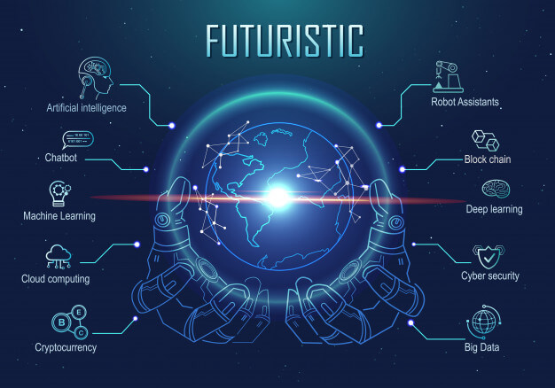

AI (Artificial Intelligence): What We Can Expect In The New Year
As I covered in a recent post for Forbes.com, this year has seen notable breakthroughs in AI (Artificial Intelligence). They have included innovations about algorithms–like GANs or Generative Adversarial Networks–as well as advances in categories like NLP (Natural Language Processing), just to name a few.
Then what can we expect in 2020? Well, it seems likely that the innovations will continue at a rapid pace.
So here’s a look at what we may see:
“2020 will be the year of practical AI: using cool technology to solve “boring” problems. Business
leaders are recalibrating their ambitions, with just 4% intending to scale AI across the organization.
Instead, many are focusing on functional areas like finance, compliance, HR, and tax and universal pain points l
ike extracting data from forms. In our survey, executives ranked
using AI to operate more efficiently and increase productivity as the top-two benefits they expect from
AI in the coming year.”